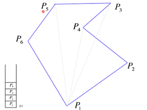
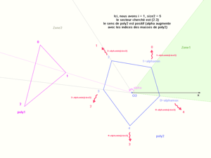
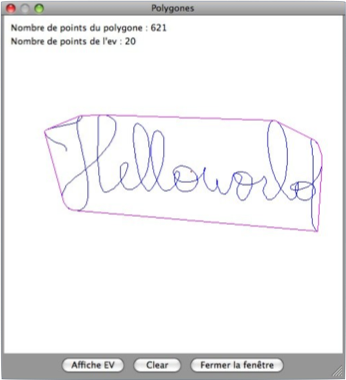

implementation du projet

Cette avant-dernière partie sʼadresse avant tout aux lecteurs curieux, souhaitant savoir comment nous avons implémenté toute cette théorie en Scheme. Certaines fonctions capitales sont entièrement commentées, et les grands algorithmes que nous avons utilisés sont détaillés : la recherche de lʼenveloppe convexe dʼun polygone, la détection de collisions entre deux convexes. Des pré-requis en scheme sont indispensables pour comprendre les morceaux de codes présentés, mais la compréhension des algorithmes ne pré-suppose aucune connaissance dans ce langage.
Recherche de l’enveloppe convexe
d’un polygone
Détermination de l’intersection
de deux convexes
Le dernier module de la présentation permet de se convaincre que raisonner sur l’enveloppe convexe pour détecter les collisions d’un polygone contre les parois de la fenêtre d’affichage est parfois judicieux, car cela réduit la taille des données à parcourir.
Après avoir dessiné une figure, le nombre de points qu’elle comporte s’affiche, ainsi que le nombre de points formant son enveloppe convexe. Un clic sur “Affiche EV” permet de la faire apparaître, “Clear” permet de redessiner une nouvelle figure.


